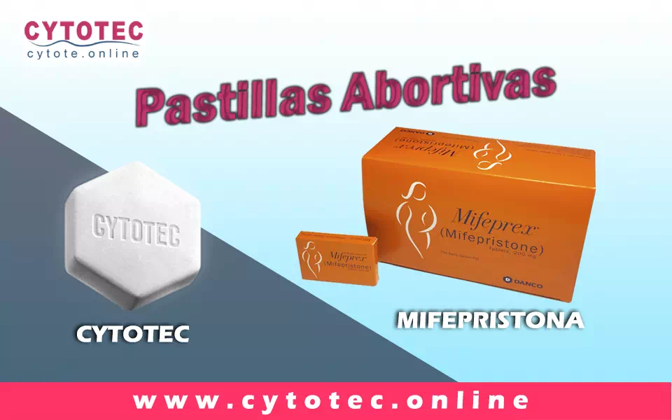
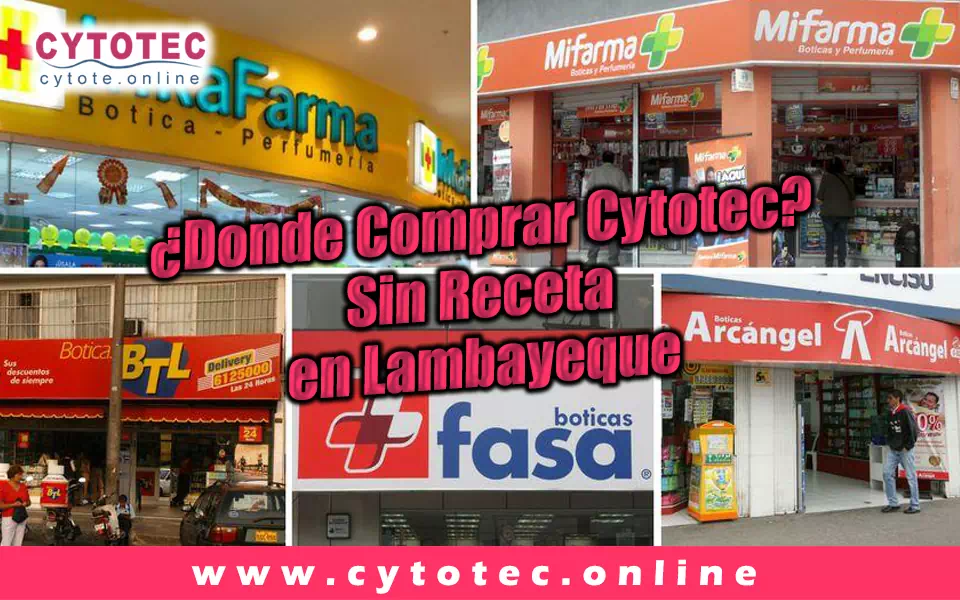
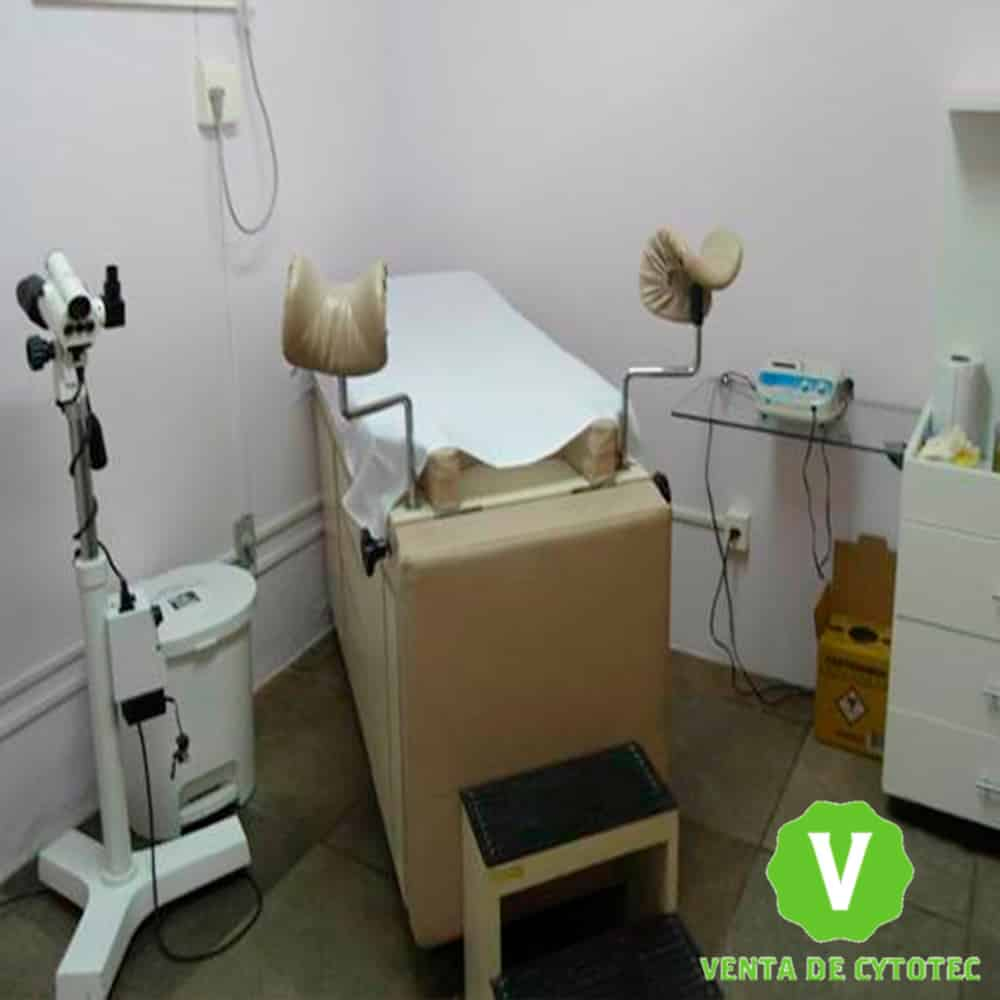

VENTA de
PASTILLAS ABORTIVAS
CYTOTEC en Lambayeque
Aquí
- Cytotec Chiclayo
- Pastillas Abortivas Chiclayo
- Cuáles Son Las Pastillas Abortivas
- Misoprostol Chiclayo.
- Donde Comprar Cytotec Sin Receta Lambayeque
- Clínicas Abortivas En Chiclayo
- Venta De Cytotec En Lambayeque
- Precio De Cytotec
- Donde Comprar Cytotec En Farmacias
- Donde Comprar Pastillas Abortivas
- Pastillas Abortivas Nombres Y Precios
- Atraso Menstrual Chiclayo
- Atraso menstrual en Chiclayo solución
- Cytotec
- Donde Venden La Mifepristona
- Pastillas Abortivas Inkafarma
Cytotec Chiclayo
el tratamiento con pastillas Cytotec en Chiclayo A igual que en todo Perú está indicado como tratamiento contra ulceras y padecimientos estomacales, su venta farmacias y boticas únicamente es permitida presentando la prescripción médica certificada. Su uso como tratamiento abortivo se realiza de manera clandestina en Lambayeque. Su efectividad es garantizada siempre que se administre dentro del tiempo de gestación indicada y con las indicaciones clínicas fundamentales
Pastillas Abortivas Chiclayo
son un grupo de medicamentos determinados que cumple la función de interrumpir el embarazo. Este método con medicamentos es la alternativa que prefieren las mujeres al interrumpir su embarazo. Tiene un bajo costo, no es invasivo y puede realizarse en casa hasta la semana 9 u 11 de embarazo.se recomienda tomar dos medicamentos distintos para este proceso son el Misoprostol y la Mifepristona Son medicamentos seguros y de alta efectividad para inducir el aborto.
Cuáles Son Las Pastillas Abortivas
el Misoprostol y la Mifepristona Son medicamentos seguros y de alta efectividad para inducir el aborto. A pesar de ello, deberás de entender que como todo medicamento y procedimiento clínico hay contraindicaciones, riesgos y otros datos que debes de conocer.
- Mifepristona: La mifepristona es un compuesto esteroideo que bloquea la acción de la hormona progesterona. Entre otras funciones, la progesteronapromueve la formación de vasos capilares para que el embrión pueda alimentarse. Al bloquear su acción, el saco gestacional se debilitará y facilitará su desprendimiento.
- Misoprostol: El misoprostol es una prostaglandina, actúa sobre el tejido liso del cual está conformado el útero. Será el responsable de abrir el cuello uterino y de crear fuertes contracciones para que el útero pueda expulsar el tejido embrionario
Misoprostol Chiclayo.
El uso de (Misoprostol) en Lambayeque. ha logrado establecer un nuevo régimen en los cuales se utilizan estas pastillas las cuales ofrecen una opción más práctica y por preferencia mayor en comparación a los procedimientos con métodos quirúrgicos, la efectividad de este medicamento está relacionada con su uso adecuado, razón por la cual el aborto medico se cataloga como efectivo, económico y seguro Su efectividad depende el método elegido, siguiendo las indicaciones, dosis establecida y como complemento fundamental es de gran importancia mantener un control médico constante. sobre todo, en los países donde la interrupción del embarazo es penada por la ley. Y como consecuencia de las barreras legales y del estigma social y moral que rodea al aborto, las mujeres prefieren someterse a los efectos de este componente principal para terminar con su embarazo.
Donde Comprar Cytotec Sin Receta Lambayeque.
las pagina web informativas donde se ofertan las pastillas Cytotec sin receta médica es uno de los canales recomendado, para adquirir este medicamento con entrega a domicilio (delivery). Si necesitas interrumpir un embarazo, te recomendamos nuestro servicio efectivo y garantizado. tenemos a la venta el mejor Fármaco abortivo Misoprostol Cytotec 200mcg de Laboratorio Pfizer Originales, cada blíster cuenta con fecha de elaboración, caducidad, lote, registro sanitario, las pastillas son blancas de forma hexagonal con el dígito 1461 grabado. Te invitamos a contactarnos por nuestro número de teléfono. destacado en nuestro website. no solo ofrecemos la mejor asesoría personalizada, a cada una de nuestras clientas, sino que también garantizamos la venta de un excelente producto de calidad con un stock en constante renovación. A un excelente precio según la dosis que requieras dependiendo de tu tiempo de gestación.
Clínicas Abortivas En Chiclayo.
Debido a que el aborto médico no está legalizado en Perú, es imposible señalar alguna clínica que realiza un aborto médico legal, debido a esto el uso de Cytotec como método abortivo es clandestino, acudir a cualquier clínica o centro de salud para tratar las consecuencia o efectos secundarios por el uso de Cytotec es amparado por la ley, todo centro médico está en la obligación de brindar la atención medica necesarias a todas aquellas mujeres que la ameriten.
Venta De Cytotec En Lambayeque.
La compra de Cytotec en Lambayeque. esta regularizado por algunos controles gubernamentales los cuales establecen que para la venta en farmacias o boticas deben presentar la receta médica certificada, por tal motivo es casi imposible poder adquirir este medicamento en las farmacias sin receta, ya que se exponen a penalizaciones y multa por incumplimiento. También puedes ingresar a nuestra página web informativa donde podrás adquirir las pastillas abortivas originales y totalmente garantizadas a la vez cuentas con la asesoría de un especialista que te guiara paso a paso lo que te garantiza un procedimiento seguro y efectivo.
Precio De Cytotec
El precio de las pastillas Misoprostol en Lambayeque es relativo por una razón en específico, es decir como normativa legar y obligatoria se debe contar con una receta médica certificada por un gastroenterólogo ya que el uso obstétrico no es legal en Perú. salvo algunos casos excepcionales. si tiene la receta médica puedes acudir a cualquier farmacia o botica y compra las pastillas Misoprostol a un precio económico debido a los convenios entre las farmacéuticas y los laboratorios.
El precio de nuestro producto está relacionado principalmente con su tiempo de embarazo. ya que ofrecemos paquetes especifico según su tiempo de gestación, sumado a esto. En nuestra página web informativa. Garantizamos la venta del mejor Fármaco abortivo en Perú, Cytotec 200mcg de Laboratorio Pfizer Originales, cada blíster cuenta con fecha de elaboración, caducidad, lote, registro sanitario, las pastillas son blancas de forma hexagonal con el dígito 1461 grabado. Aparte de ofrecer un producto garantizado brindamos asesoría ante cualquier duda y servicios de envíos o delivery.
- Tiempo de gestación de 8 semanas o menos. Tratamiento: 8 pastillas de Cytotec, 2 de mifepristona, antibióticos y antinflamatorios todo el tratamiento a un costo de 250 soles.
- Tiempo de gestación mayor de 8 semanas hasta 12 semanas. tratamiento: 12 pastillas de Cytotec, 4 de mifepristona, antibióticos y antinflamatorios todo el tratamiento a un costo de 300 soles
Donde Comprar Cytotec En Farmacias
La venta de Cytotec en farmacias de Lambayeque. está permitida pero solo puedes comprarla si presenta tu receta médica certificada emitida por un gastroenterólogo ya que su uso está indicado como tratamiento contra ulceras y afectaciones estomacales
Donde Comprar Pastillas Abortivas
Comprar pastillas abortivas en Perú, este sujeto a las regulaciones legales que rigen sobre la venta de este medicamento, es decir en farmacias y boticas únicamente puedes comprarlas si presentas la receta médica certificada, sin esta es casi imposible que puedas comprarlas en cualquiera de estos comercios
En la web puedes adquirir este medicamento de manera online sin necesidad de receta médica, donde puedes contactar a una variedad de vendedores que ofertan estos medicamentos, de igual manera te invitamos a ingresar en nuestro website donde gustosamente será atendida por un especialista que te brindará toda la información necesaria acerca de uso dosis y costo de las pastillas Cytotec.
Pastillas Abortivas Nombres Y Precios.
Debido a la demanda de las pastillas abortivas a nivel mundial. muchos laboratorios patentaron medicamentos con el componente activo Misoprostol, el cual es el que ocasiona la interrupción del embarazo. por este motivo existen muchas marcas en el mercado, su costo es variante según el país donde se este y sus legislaciones, actualmente en Perú. se logra conseguir a la venta marcas como:
- Cytotec
- Arthrotec
- Oxaprost
- Misoprolen
- Cytofine
Pero la de mayor demanda y aceptación es el Cytotec, su costo vario según donde la adquieras. en farmacias es económico debido a los convenios con los laboratorios, en nuestra página web. puedes solicitarla en la comodidad de tu hogar, con asesoría paso a paso como realizar el procedimiento y de manera garantizada, la dosis se relaciona directamente con tu tiempo de embarazo.
- Tiempo de gestación de 8 semanas o menos. Tratamiento: 8 pastillas de Cytotec, 2 de mifepristona, antibióticos y antinflamatorios todo el tratamiento a un costo de 250 soles.
- Tiempo de gestación mayor de 8 semanas hasta 12 semanas. tratamiento: 12 pastillas de Cytotec, 4 de mifepristona, antibióticos y antinflamatorios todo el tratamiento a un costo de 300 soles.
Atraso Menstrual Chiclayo
son irregularidades del ciclo menstrual, que se manifiestan por el atraso temporal en la bajada del periodo (regla). En ciertos casos se considera normal un atraso menstrual de (3 a 10 días) partiendo de la fecha que le corresponde venir la regla. Si se excede por tiempo prolongado de manera irregular es evidente que algo está ocurriendo en tu cuerpo que afecta tu salud integral.
Atraso menstrual en Chiclayo solución
Si tienes un atraso menstrual, lo primero que debe realizar es un test de embarazo para descartar esa probabilidad. Si el atraso menstrual perdura por un determinado lapso de tiempo y no logra identificar la causa, lo más recomendable es acudir al ginecólogo para que pueda identificar cuál es el origen y tratar el problema, El médico podrá solicitar exámenes como la prueba de progesterona y de prolactina para intentar identificar el motivo de este retraso e indicar el tratamiento más adecuado.
Cytotec.
Cytotec Fue comercializado por primera vez en 1985 para el tratamiento de las úlceras en el estómago. Actualmente se sigue vendiendo para ese fin. Cytotec es un medicamento seguro y eficaz para el aborto hasta la semana 12 de embarazo. no se acumula en el cuerpo de las mujeres ni causa daño a su fertilidad; puede embarazarse nuevamente después de abortar con Cytotec. En la actualidad se usa también en hospitales para el tratamiento de aborto incompleto, para ayudar a inducir el parto y para tratar y prevenir la hemorragia post-parto. Debido a todos sus beneficios en la salud reproductiva de las mujeres, el Cytotec está incluido en la lista de medicamentos esenciales para la humanidad de la OMS, lo cual significa que todos los países deberían tenerlo en sus planes de salud.
Donde Venden La Mifepristona.
Este medicamento por lo general solo es manejo institucional, ni en farmacias se puede comprar por que debe ser administrado bajo constante supervisión médica, pero de igual manera se puede adquirir de manera más accesible a través de nuestro portar web, donde se promociona el paquete abortivo de dosis exacta de mifepristona y misoprostol. Dando asesoría de uso acorde con la situación del cliente, destacando que siempre es una ventaja tener un control de embarazo previo ya que de esta manera estará aún más segura de cada paso a seguir, aparte de la venta del producto y la asesoría te ofertan las entregas a domicilio (delivery)
Pastillas Abortivas Inkafarma
Inkafarma es una cadena de farmacias con un gran número de sucursales en todo Perú. en la cual puedes comprar las pastillas Cytotec a un precio muy económico, pero debes presentar la receta médica certificada. sin esta no podrás adquirir las pastillas Cytotec. 200mcg de Laboratorio Pfizer Originales, cada blíster cuenta con fecha de elaboración, caducidad, lote, registro sanitario, las pastillas son blancas de forma hexagonal con el dígito 1461 grabado. En el caso de la mifepristona su venta o manejo es únicamente de manera institucional por tal motivo ni en farmacias las puedes adquirir
Comprar pastillas Cytotec
Comuniquese con nosotros dando clicc Aquí para darle mayor informacion.
Venta de Pastillas Cytotec

Cytotec - Misoprostol
Vendemos pastillas Cytotec originales del laboratorio Pfizer, pastilla tiene 200 mg y
viene sellado en su respectivo blister, presenta la fecha de fabricacion, fecha de
vencimiento, registro sanitario y las características por dentro. Las pastillas son
pequeñas de forma hexagonal marcada con su determinado código 1461 que la acredita con
la veracidad de las mismas.
Es necesario 2 dosis. Cada dosis constituye de 4 pastillas, en total serian 8 pastillas
(cada una, contiene 200 mg. de Misoprostol). Se les recomienda a los pacientes tener una
previa ecografía. No realizar dicho procedimiento si se tiene diabetes, hepatitis tipo
C. Dificultades para la coagulación de la sangre y que tampoco tengan ningún tipo de
puntos como cesáreas recientes en el área del abdomen
En Resumen:
- Tabletas: Cito protector y antisecretor para el tratamiento de la úlcera péptica
(Misoprostol)
- Forma Farmacéutica y Formulación
- Cada TABLETA contiene: Misoprostol 200 mcg. Excipiente, c.b.p. 1 tableta.
Tabletas con 200 mcg de misoprostol sin recubrimiento de color blanco y con forma
hexagonal; de un lado, llevan grabadas las leyendas “1461”.
Que hacer después de haber usado Cytotec
Se recomienda que después de haber realizado el aborto tomar un reposo aproximado de entre 1 a 2 días, estando en casa el reposo será totalmente normal, esto con la finalidad de cicatrizar rápidamente dentro del útero donde se produjo el desprendimiento.Pastillas Abortibas Cytotec en Lambayeque
Pastillas Abortibas Cytotec en Lambayeque
Que es una Pastillas abortivas o pastillas para abortar
La píldora abortiva, aborto inducido o aborto con medicamentos es un modo segura y eficientes de impedir un embarazo en su periodo inicial.
¿Cuándo puedo tomar la píldora abortiva?
Lo habitual, la pastilla abortiva se ingiere hasta 70 días (10 semanas) en tu último período menstrual luego del primer día. Si ya pasaron 71 días o más desde tu última menstruación, puedes obtener un aborto elaborado en un consultorio para interrumpir el embarazo.
¿Por qué eligen la píldora abortiva?
Cualquier otro tipo de aborto que elijas depende de las circunstancias y
particularidades personales. A diferentes personas tienen la idea de que en el
caso del aborto con farmacos no tienen que ejecutarse un procedimiento en una
clínica abortiva o especializada en este tipo de circunstancias. Puedes
realizarte el aborto con medicamentos en tu casa o en otro lugar que elijas que
te parezca cómodo. Puedes elegir tu compañia en el proceso del aborto o si vas a
realizarlo sin algún acompañante. Habiendo dicho lo siguiente, que el aborto con
fármacos o con medicamentos es equivalente al aborto espontáneo, multitud de
personas opinan que es más “natural” y menos invasivo.
Tu doctora, enfermera o el personal del consultorio pueden auxiliar a decidir
cuál es el modo indicado para usted.
¿Cómo funciona la píldora abortiva Cytotec?
Tenemos Una Unida Odstetricia referente en Lambayeque, Del Mismo Modo, Nuestro Servivios Es Lider En Lambayeque Capas De Darle El Mejor Tratamiento Si Sufre De Un Cytotec.
Aborto espontáneo, ¿que es?
El vocabulario médico para esta forma de pérdida es “aborto espontáneo”.
El aborto espontáneo es cuando un feto muere antes de la semana veinte de que la
mujer alla quedado embarazada. El aborto espontáneo habitualmente ocurre
anticipado en un embarazo, entre ocho y diez abortos espontáneos acontecen
durante los primeros tres meses.
Muchas personas perciben este tipo de pérdida del embarazo. De hecho, entre el
10 y el 20% de los embarazos terminan en abortos espontáneos. De hecho es algo
común, el aborto espontáneo puede ser emocionalmente difícil de afrontar. Es
normal tener sentimientos de pérdida y duelo.
El aborto espontáneo y sus causas
Es difícil llegar a saber justamente por qué se causó un aborto espontáneo, pero
casi nunca es causado por algo realizado por la mujer embarazada. Las acciones
normales como hacer ejercicio, trabajar, tener sexo, y tomar la mayoría de los
fármacos NO inducen un aborto espontáneo. Las lesiones menores, como las caída,
habitualmente tampoco son la causa de un aborto espontáneo. Algunas cosas que se
sabe que producen un aborto espontáneo incluyen las siguientes:
• Que el óvulo fecundado posea un número disparejo de cromosomas (genes). Esto
se produce al azar, de manera que no lo puedes impedir ni estimular.
• Algunas enfermedades, como la diabetes grave, pueden desarrollar el riesgo de
padecer un aborto espontáneo.
• Cuando se produce una infección muy seria o una lesión mayor pueden originar
un aborto espontáneo.
• Los abortos espontáneos tardíos —después de los 3 meses— pueden suceder por
anomalías en el útero.
• Si ya se ha padecido de 2 abortos espontáneos continuos, es muy posible que
tengas otro.
tipos de aborto espontáneo
Existen diferentes tipos de aborto espontáneo:
• Amenaza de aborto espontáneo: posees sangrado vaginal, en algunos casos con
cólicos moderados, pero el cuello uterino permanece cerrado. La mitad de las
veces, el sangrado se contiene, y el embarazo se desarrolla normalmente. La otra
mitad de las amenazas terminan irremediablemente en abortos espontáneos y en la
pérdida del embarazo.
• Aborto espontáneo inevitable: la hemorragia aumenta, y tu cuello uterino se
abre. Si sucede esto, no hay probabilidades de que tu embarazo se extienda.
• Aborto espontáneo incompleto: parte del tejido del embarazo sale de tu útero,
y parte queda dentro. A veces, es necesario un tratamiento para quitar el tejido
restante.
• Aborto espontáneo completo: todo el tejido del embarazo sale del útero.
Generalmente no es necesario ningún tratamiento adicional.
• Aborto espontáneo retenido: no tienes cólicos o sangrado, pero el ultrasonido
indica un embrión sin latido cardíaco o un saco gestacional vacío, es decir, sin
el embrión. Generalmente el tejido sale del cuerpo solo, pero puedes necesitar
tratamiento.
Embarazo no deseado
Un embarazo no deseado es un suceso muy estresante para la mujer, ya que debe
afrontar una decisión muy significativa de manera emocional y física.
¿Qué es el embarazo no deseado?
El embarazo no deseado se provoca cuando la mujer queda embarazada sin quererlo
o sin una organización anticipada, otros casos podrían tratar que fallara el
anticonceptivo o por la fisura hecha en un condón.
Es muy significativo que la mujer, y mas que todo la adolescente posea una
anticipada educación sexual, exíste aproximadamente un 60% de mujeres jovenes
que han quedado embarazadas sin quererlo y terminar abandonando la escuela.
Cómo prevenir un embarazo no deseado
Para impedir un embarazo no deseado, lo más sustancial es utilizar un método
anticonceptivo, como por ejemplo si no posees una pareja estable lo mejor es
manipular un condón que además bien manipulado puede proteger del contagio de
enfermedades de transmisión sexual.
Cuando una mujer queda embarazada es importante que piense de manera libre qué
es lo mejor para ella, si continuar con su embarazo o abortar. En caso de tomar
la decisión de interrumpir su embarazo debe acudir a una clínica de aborto legal
y segura donde le presten toda la ayuda que necesita tanto emocional como
física.
Causas del embarazo no deseado
• tener relaciones sexuales sin utilizar métodos anticonceptivo.
• Realizar el coito interrumpido en las relaciones sexuales con penetración.
• Existen jóvenes que mantienen la idea que si tienen relaciones sexuales en su
primera vez no hay posibilidad de un embarazo y esto es algo equivocado
• Tener relaciones cuando la mujer esta menstruando.
• Hay quienes creen que por tener relaciones de pie impiden la concepción de un
embarazo
Embarazo no deseado en adolescentes
El embarazo no deseado en adolescentes se describe como la gravidez de menores
entre doce y diecinueve años.es denominado como embarazo no deseado ya que
existen restricciones al momento de continuar con los estudios y las
obligaciones que involucra mantener un bebe debido a que todavía mantiene
dependencia económica
El embarazo no deseado en la adolescencia esta ligado al embarazo precoz; ambas
términologias son utilizadas en ocasiones como sinónimos, ya que se piensa que
el embarazo es deseado después de esta edad.
Pastillas para abortar
¿Qué es Cytotec?
Se podría decir que cuando hablamos de cytotec o misoprostol estamos hablando de
medicamentos iguales
El cytotec es semejante a la Prostaglandina E1 (PGE1), medicamento utilizado
para evitar las úlceras gástricas, de igual manera es empleada para realizar
abortos espontáneos, para provocar un parto, impedir hemorragias postparto y
como método abortivo
El cytotec fue creado y mercantilizado por GD Searle y Company (ahora Pfizer),
bajo el nombre comercial antes mencionado. Por eso, Cytotec es apenas el nombre
comercial dado a Misoprostol.
¿Que Es Misoprostol?
De acuerdo a la OMS (Organización Mundial de la Salud), el Misoprostol es un
fármaco seguro y poderoso para un aborto hasta la semana doce de embarazo. Es un
tal fármaco que no causa daño alguno en la fertilidad de la mujer. Esto quiere
decir que, después de haber tomado este medicamento puede volver a quedar
embarazada de nuevo
El Cytotec en Lambayeque
Cytotec
¿Que es el Cytotec?
El Cytotec o retraso de la menstruación son los signos prematuros de un embarazo, no
obstante, existen otras causas que pueden hacer que la regla no baje en el día
calculado, generalmente, algunos pocos días de retraso en la menstruación pueden ser
normales hasta en mujeres con ciclos menstruales normales, sin que tenga algo que ver
medicamente.
En mujeres que no han estado embarazadas. Incluso cuando el periodo menstrual no llegar
en un mes calculado, las probabilidades de ser algo relevantes son pequeñas. No
obstante, cuando hay un retraso de 3 meses seguidos de no bajar la regla. Tomamos en
cuenta que la mujer puede presentar amenorrea, en casos así, ya descartada la idea de
embarazo, se puede considerar que ciertas enfermedades son las causantes del Cytotec.
En las mujeres no embarazadas, incluso cuando la menstruación no viene en un determinado mes, la oportunidad de eso ser algo importante es pequeña. No obstante, cuando las reglas no se bajan durante 3 meses seguidos, consideramos que la mujer presenta amenorrea. En estos casos, una vez excluida la posibilidad de embarazo, algunas enfermedades pueden estar por detrás del cese de la menstruación.

Que Hacer si Tengo un Cytotec
Principalmente se debería acudir a un medico ginecólogo de confianza y realizarse los
determinados exámenes para encontrar las causas del Cytotec o amenorrea, ya resuelta la
causa del retraso menstrual lo consiguiente seria seguir con el tratamiento establecido
para impedir que este se vuelva a repetir.
Nosotros podemos ayudarte y asesorarte en consultorios privados apropiados para tu
salud, el retraso o Cytotec tiene solución. Tengan en cuenta que tienen libertad de
elegir la elección que mejor se adapte a su situación. Asistir al centro medico no mas
tenga dudas de retraso en la menstruación, cuanto menos tiempo deje pasar la solución
será mas sencilla
Recomendaciones
• debe descartar un embarazo, primeramente.
• Si esto pasa, lo recomendable sería ir a un especialista.
• Aconsejamos hacerse una ecografía abdominal y así poder detectar.
• abandono de las pastillas anticonceptivas puede conducir irregularidades.
• El especialista debe estar al tanto sobre cualquier variación que se haya sufrido.
Clínicas para abortar
Contamos con consultorios especializados localizados en varios puntos
de la ciudad de Lambayeque.
En la actualidad contamos con solo 2 formas, métodos o tipos para dar solución a un
retraso o Cytotec. Con medicamentos abortivos o con limpiezas quirúrgicas. El primer
método que es con pastillas abortivas consiste en consumir o tomar fármacos, pero solo
es recomendable hasta las doce semanas de embarazo, mientras tanto el método de la
limpieza quirúrgica con anestesia trata de una intervención quirúrgica que es realizada
hasta las dieciocho semanas de embarazo.Los 2 métodos mencionados anteriormente son
totalmente seguros siempre y cuando se realice bajo la supervisión de especialistas en
habientes apropiados para realizar cualquiera de los servicios.
Puede comunicarse con nosotros para mayor información y le brindaremos servicio
especializado y atención de 7:00 am a 10:00 pm. De lunes a sábado.
Consultorios
Chachapoyas

Bagua
Bongará
Yurimaguas

Iquitos

Rodríguez de Mendoza

Mito sobre el aborto con medicamentos ¿es el menos doloroso? – Falso
Realidad: los niveles de receptividad de dolor son distintos para cada
individuo, los procesos que se utilizan para interrumpir un embarazo gran parte de las
veces llevan a distintos tipos de malestares físicos como lo son el dolor pélvico,
nauseas, dolor de cabeza, escalofríos, fiefre o vomito, entre otros. Por experiencias
anteriores descubrimos que la reacción a los tratamientos dependen de diversos factores:
el estado físico, alimentación, enfermedades de base, experiencias previas, manejo
emocional, red de apoy, entre otros.
La verdad es la siguiente, es posible sentir dolor en medio del proceso, sin ser
relevante el tipo de tratamiento escogido para detener el embarazo, siempre suelen a
recurrir a analgésicos para el manejo del dolor y las pacientes cuentan del preguntar en
cualquier momento alguna anormalidad.
Contactanos
Mantente En Contacto Con Nosotros Para Un Servicio Personalizado
Contacto

- Av. San German La victoria Chiclayo Lambayeque 1436
- Aquí
- cytotec2010enlima@gmail.com
- lambayeque.farmacias-cytotec-peru.shop
cytotec Chiclayo Lambayeuqe pastillas abortivas Chiclayo misoprostol Chiclayo cuanto cuesta un aborto en Chiclayo Lambayeque clinicas seguras para abortar Chiclayo